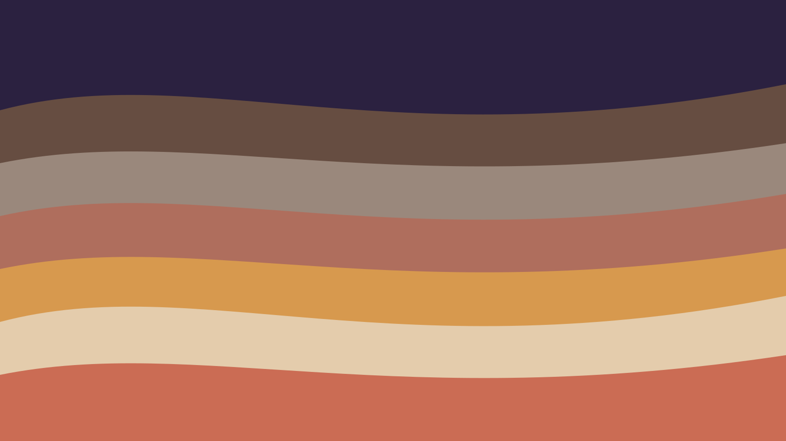

Case study · Festival identity
Tidewater Film Week
A flexible identity for a seaside documentary festival, built from one drawn line that can rise, break and settle across forty screens and a hundred posters.

The challenge
The festival had outgrown a logo designed for its first year, when it showed six films in a church hall. It now runs for a week across three venues and a beach screen, and needed a look that could stretch without losing its voice.
The brief asked for something that felt coastal without leaning on boats, gulls or lighthouses.
Approach
We started with a single hand-drawn line: the horizon seen from the festival’s home pier. Every application uses that line, raised for headline films, broken for late-night programmes and flattened for the closing night.
- One drawn line, digitised as a variable stroke.
- A two-colour palette with a third reserved for the beach screen.
- A motion rule: the line only ever moves at the speed of a slow tide.
It is the first identity we have had that our volunteers can draw on a chalkboard.
Outcome
The system shipped in eleven weeks and was used by the festival’s own volunteers for most of the printed material.
40 screen idents from one motion rule
3× more programme downloads
11 weeks from brief to launch